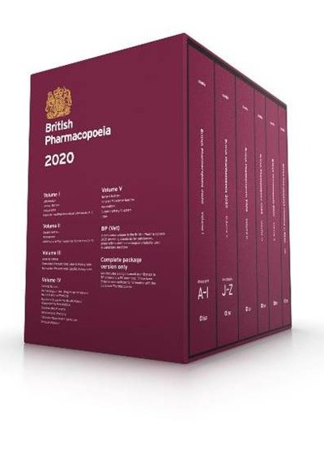
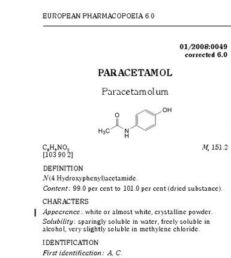
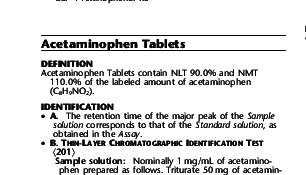
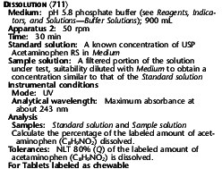
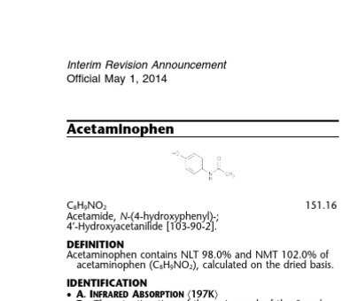
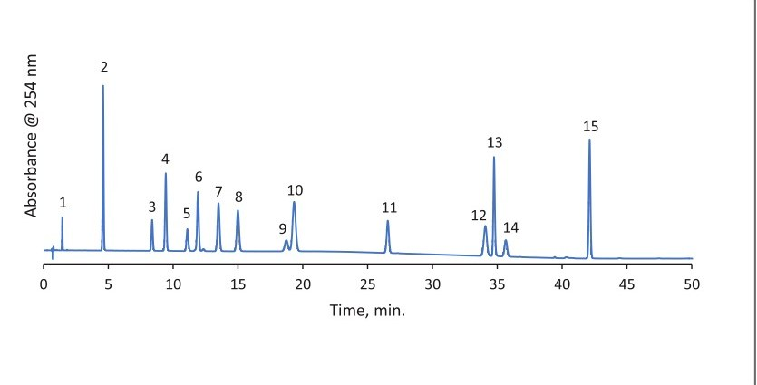

Every medicine sold in Malaysia must be registered with the National Pharmaceutical Regulatory Agency (NPRA). Yet when NPRA took registered products from the market in 2025 and tested them in its own laboratory, 49 of 654 samples did not meet their specification. (NPRA, 2025)
Registration is a promise that every unit will be the same. This course shows how oral solid doses are designed and made to keep that promise, and how quality control testing checks that they do.
Written for Diploma in Pharmacy students. Use Next to move through the pages, or Contents to jump around.
An oral solid dose (OSD) is a medicine given as a single solid unit that the patient swallows. Each unit contains a measured amount of the active drug, called the dose. This course covers the three most common forms:
Oral solid doses are the most common way medicines are supplied because they suit patients, pharmacies and manufacturers at the same time:
But they also have limits. Open both sections below before moving on.
The drug works more slowly than an injection, because it must first be released and absorbed from the gut. Some drugs are also partly broken down by the liver before reaching the rest of the body, which is called first-pass metabolism.
Young children and some older adults find tablets and capsules hard to swallow. This is one reason newer forms, such as tablets that disintegrate in the mouth, were developed.
Before a drug in a tablet or capsule can work, three things must happen, always in this order:
The order matters. A drug can only be absorbed once it is dissolved, and it can only dissolve quickly once the tablet has broken up and exposed a large surface to the fluid. If either of the first two steps is slow or incomplete, less drug reaches the blood, and the patient may not get the full effect.
People made pills by hand for centuries. The forms we use today come from a handful of 19th and 20th century inventions:
A tablet also contains excipients: ingredients with no medical effect of their own that make the tablet possible to manufacture, strong enough to handle, and able to release the drug in the body. Tap each card to see its job, and what goes wrong without it.
A tablet press fills each die with a fixed volume of powder, not a fixed weight. If the powder flows smoothly, every die receives about the same amount, so every tablet weighs about the same and contains about the same dose.
Fine, light powders tend to clump and flow unevenly, so some dies get more powder than others. Granulation fixes this by binding fine particles into larger, denser granules that pour freely, like sugar compared with flour.
The formulator chooses a route based on how well the powder flows and compacts, and whether the drug can tolerate water and heat.
Direct compression is preferred when the powder allows it, because every extra step adds time, cost and chances for error. Dry granulation (often by roller compaction) suits drugs damaged by moisture or heat. Wet granulation gives the best flow, but only for drugs that tolerate water and drying.
Answer all three questions to continue. Go back one page if you need a reminder.
Every step is recorded in a batch manufacturing record, so anyone can trace what was used, by whom and when. Ingredients are weighed and checked against this record before mixing begins.
Blending matters because the drug must be spread evenly through the whole batch; otherwise some tablets get too much and others too little. Packaging is part of quality too: blister packs and sealed bottles protect tablets from moisture and light until they are used.
Samples are also taken and tested during production. This is called in-process control, covered in the quality control section.
A tablet is formed in a die (a hole in a steel plate) between an upper punch and a lower punch. On a rotary press, dozens of punch sets travel round a turntable, and each set repeats the same four steps:
The amount of powder in step 1 sets the tablet's weight, and the force in step 3 sets its hardness. Both are checked during production.
After compression, tablets can be sprayed with a coating in a rotating pan. The coating is chosen for a purpose:
| Coating | What it is | Why it is used |
|---|---|---|
| Film coat | A thin polymer layer | Masks taste, eases swallowing, protects from light and moisture, adds colour for identification |
| Sugar coat | Many thick sugar layers; an older method | Masks taste and gives a smooth, glossy finish |
| Enteric (gastro-resistant) coat | A polymer that does not dissolve in acid | Protects the drug from stomach acid, or the stomach from the drug, so release happens in the intestine |
| Modified-release coat | A layer that controls how fast drug escapes | Spreads release over many hours, so fewer doses are needed |
Coating changes how a tablet must be tested. For example, film-coated and enteric tablets have different disintegration requirements from plain tablets.
Most tablet defects come from the formulation, the press settings or worn tooling. Tap each card to see the cause and the test that catches it.
The empty two-piece shells are bought ready-made. A filling machine then:
Shells are usually made of gelatin. Plant-based HPMC (hydroxypropyl methylcellulose) shells were introduced in 1989; gelatin remains more common because it costs less. Because capsule filling avoids compression, it can suit drugs that are hard to make into tablets. (Capsule (pharmacy))
Hard capsule sizes run backwards: size 000 is the largest, holding about 1.36 mL, and size 5 is the smallest, about 0.13 mL.
The formulator picks the smallest size that holds the full dose plus excipients, because smaller capsules are easier to swallow. A very large dose may need a big capsule or two capsules per dose, which is one reason some products are made as tablets instead.
Two continuous ribbons of warm gelatin, softened with a plasticiser such as glycerin, are fed between two rotating die rolls. Each roll has pockets cut into its surface.
As matching pockets meet, a pump injects a measured dose of fill between the ribbons, and the rolls press the ribbons together, sealing and cutting out each softgel. The softgels are then dried to firm up the shell.
Softgels suit drugs that are dissolved or suspended in oil, including drugs that dissolve poorly in water.
| Hard capsule | Softgel | |
|---|---|---|
| Shell | Two rigid pieces of gelatin or HPMC | One soft, sealed piece of gelatin with plasticiser |
| Fill | Dry: powder, granules, pellets | Liquid: oils, solutions, suspensions |
| How made | Ready-made shells are filled and closed | Shell is formed and filled at the same moment (rotary die) |
| Good for | Drugs that are hard to compress | Oily or poorly water-soluble drugs |
Gelatin comes from animal sources, and many patients want to know which. Plant-based HPMC shells give patients who avoid animal-derived gelatin an alternative. Pharmacy staff should be ready to answer questions about capsule shells when dispensing.
A specification is the list of tests, methods and limits a product must pass. A pharmacopoeia is an official book of standard tests and limits.
In-process control (IPC) happens on the production floor. Operators check tablet weight, hardness, thickness and friability at regular intervals while the press runs. If results drift, they adjust the press straight away, before a whole batch is wasted.
Finished product testing happens in the quality control laboratory after production. Samples from the batch are tested against every item in the specification. The batch is released for sale only if every result passes.
The limits on the following pages come from the pharmacopoeia texts cited on each page. Always check the current edition and the product's own monograph.
Take 20 units at random, weigh each one, and calculate the average (mean) mass. Then compare every unit with that average. (Ph. Eur. 2.9.5)
The chart shows tablets averaging about 250 mg, where the limit is 5%. Green band: within 5%. Dashed red lines: twice the limit (10%). Press the button to simulate new batches; the data are made up.
Lighter units are allowed a larger percentage deviation, because the same small weighing error is a bigger share of a small tablet.
| Dosage form | Average mass | Limit |
|---|---|---|
| Tablets (uncoated and film-coated) | 80 mg or less | 10% |
| More than 80 mg, less than 250 mg | 7.5% | |
| 250 mg or more | 5% | |
| Capsules | Less than 300 mg | 10% |
| 300 mg or more | 7.5% |
Weighing only works as a check on dose when the drug makes up a large part of each unit. If the drug is a tiny fraction of the tablet, it may be spread unevenly through the blend, so two tablets can weigh the same yet contain different amounts of drug. Then the drug in each unit must be measured directly.
The 25/25 rule applies to hard capsules and uncoated or film-coated tablets; other dosage forms need content uniformity. (USP <905>)
The acceptance value (AV) is calculated from the results and combines two things: how far the average is from the target amount, and how spread out the individual units are. A batch with a perfect average can still fail if some units are very high and others very low, because each patient takes one unit, not the average. (USP <905>)
Hardness, properly called breaking force, is the force needed to crush a tablet between two jaws, usually measured in newtons (N). There is no single correct value: each product has its own target range, set during development.
Move the slider to see why a range is needed.
Hardness is set mainly by the compression force in step 3 of the press cycle, which is why it is checked often during production.
Friability tests whether tablets chip or wear away when knocked about, as they are during packing and transport. (USP <1216>)
Friability is expressed as the percentage of the starting weight that was lost:
Try changing the final weight to 6.420 g. Losing only about 0.05 g more turns a pass into a fail, which shows how sensitive the test is.
Six units are placed one per tube in a basket with a mesh floor. The basket moves steadily up and down in a liquid medium (usually water) kept at body temperature, 37 °C.
A unit counts as disintegrated when no firm core is left on the mesh; only soft remains or bits of shell or coating may stay behind. The test passes when all six units have disintegrated within the time limit for that dosage form.
Passing shows the unit breaks up in time. It does not prove the drug dissolves; that needs the dissolution test.
The time limit reflects how each form is designed to behave. Dispersible and effervescent tablets are meant to break up in a glass of water before they are taken, so they must work within minutes.
Coatings and capsule shells must dissolve before the contents can break up, so film-coated tablets and capsules are allowed 30 minutes, compared with 15 minutes for a plain, uncoated tablet.
An enteric (gastro-resistant) coat is designed to survive stomach acid and dissolve only in the less acidic intestine. So the test checks both halves of that promise:
Failing stage 1 means the drug could be released, or damaged, in the stomach. Failing stage 2 means it might never be released at all.
A tablet can pass disintegration while its drug still dissolves too slowly. The dissolution test measures how much of the drug has dissolved after a set time. (USP <711>)
Each unit sits in its own vessel of medium at 37 °C, stirred by a rotating basket (Apparatus 1) or paddle (Apparatus 2). Samples of the medium are taken at set times and analysed for drug.
The product's monograph sets Q: the percentage of the labelled dose that must be dissolved by the test time (see a real example in the ). In the chart, batch A clears the S1 line at 30 minutes; batch B dissolves too slowly.
For immediate-release products, testing moves on to the next stage only if the current stage is not passed. (USP <711>)
| Stage | Units | To pass |
|---|---|---|
| S1 | 6 | Every unit dissolves at least Q + 5% |
| S2 | 6 more (12 total) | Average of 12 is at least Q, and no unit is below Q − 15% |
| S3 | 12 more (24 total) | Average of 24 is at least Q, no more than 2 units below Q − 15%, and no unit below Q − 25% |
Example with Q = 80%: at S1, every unit must reach 85%. At S2, the average of 12 must reach 80% and no unit may be below 65%.
Most chemical tests use high-performance liquid chromatography (HPLC), which separates the substances in a sample so each appears as its own peak.
Organic solvents are used to make drugs and coatings, and traces can remain in the final product. The international guideline ICH Q3C sorts them into three classes by how harmful they are: (ICH Q3C(R5))
Residual solvents are commonly measured by headspace gas chromatography (GC): the sample is warmed in a sealed vial, and the vapour above it is injected into the GC.
Too much water can speed up chemical breakdown of the drug, soften tablets, and encourage microbial growth, so many specifications limit water content. Two methods are common, and they measure slightly different things:
Unlike injections, tablets and capsules are not sterile, but microbes must be kept low. Results are counted as colony-forming units (CFU) per gram. Example limits for non-aqueous oral products: (TGA, citing Ph. Eur.)
| Test | What it counts | Maximum |
|---|---|---|
| TAMC | Total aerobic microbial count: bacteria and fungi that grow in air | 2000 CFU/g |
| TYMC | Total combined yeasts and moulds | 200 CFU/g |
| Escherichia coli | A marker of contamination of faecal origin | Absent in 1 g |
Products made with plant-derived raw materials have different limits. Always use the product's own specification.
Shells vary in weight, so weighing whole capsules would hide differences in the fill. Instead, the uniformity of mass test measures each capsule's contents:
Weigh the intact capsule, open it without losing any shell, empty out the contents as completely as possible, and weigh the shell. Repeat for 20 capsules, then apply the limits for capsules. For softgels, the shell is washed with a suitable solvent and left until the solvent has evaporated before weighing. (Ph. Eur. 2.9.5)
A softgel does not crumble like a tablet; its shell has to rupture to release the liquid fill. Open both sections below to continue.
The USP describes this test for dietary supplement softgels. One softgel is placed in 500 mL of water and stirred with the paddle apparatus at 50 rpm. All softgels must rupture within 15 minutes. If 1 or 2 take between 15 and 30 minutes, 12 more are tested, and the batch passes if no more than 2 of all 18 take longer than 15 minutes. (USP <2040>)
Over time, gelatin molecules can bond to each other, which is called cross-linking. The shell then becomes tougher and slower to dissolve. For gelatin softgels that fail, the USP allows a retest with the enzyme pepsin added to the water, which can digest the cross-linked gelatin much as the stomach would. (USP <2040>)
Paracetamol 500 mg uncoated tablets. Tap each result to judge it, then make your decision.
After release, NPRA's Surveillance and Complaints Section keeps watching registered products on the market. In 2025 it received 888 complaints, most about product quality and packaging, and 30 registered products were recalled, mainly for quality defects. (NPRA)
In continuous manufacturing, materials enter one end of a connected line and tablets leave the other without stopping. Orkambi (Vertex) has been made this way since its FDA approval in 2015, and in 2016 the FDA allowed Prezista (Janssen) to become the first product to switch from batch to continuous production. (RAPS, 2016)
For quality control, this means quality has to be monitored while the line runs, not only tested at the end.
In 2015, Spritam (levetiracetam, for epilepsy) became the first 3D-printed drug product approved by the FDA. It is built up in thin layers into a porous tablet that breaks up rapidly with a sip of liquid, even at doses up to 1000 mg. (PharmTech, 2015)
Technologies change, but the quality questions stay the same: is every unit alike, does it contain the right drug in the right amount, and does it release that drug as intended?
Made by Aufthority. Learning material for Diploma in Pharmacy students. Batches, scenarios and charts marked as illustrative are made up. Not a substitute for the current pharmacopoeia or a product's own specification.
You can jump to any page from here, even if a page's questions are not finished.

A pharmacopoeia is an official book of quality standards for medicines. It says what a medicine must contain, how pure it must be, and exactly how to test it.
It holds two kinds of text: monographs, one for each drug substance or product, and general methods, the shared test procedures that monographs refer to.
Major examples are the British Pharmacopoeia (BP), European Pharmacopoeia (Ph. Eur.), United States Pharmacopeia (USP), Japanese Pharmacopoeia (JP) and the WHO's International Pharmacopoeia (Ph. Int.). For product registration, NPRA accepts specifications set according to the BP, Ph. Eur., Ph. Int., USP or JP. (NPRA)

Every monograph follows the same order. This one is for paracetamol, the raw drug substance:

Acetaminophen is the US name for paracetamol. The USP has one monograph for the substance and a separate one for the finished tablets.
Notice the definition: the tablets must contain not less than 90.0% and not more than 110.0% of the labelled amount. For the pure substance, the USP limit is much tighter: 98.0–102.0%.
Why wider for tablets? A finished product passes through blending, compression and storage, so small, controlled variation is expected. That is exactly why the tablet tests in this course exist.

This is the dissolution test written into the same monograph. Read it and you will recognise everything from the dissolution pages:
The monograph sets the conditions and Q; the general chapter <711> supplies the S1–S3 rules.
Monographs do not repeat full procedures. They point to general methods by number, so the same procedure is used for every product.
When you see a code like these in a specification, it tells you exactly which procedure to follow.

Standards are revised as methods improve and new impurities are found. This USP page announces changes marked "Change to read", each with the date it becomes official.
So a laboratory must always work to the current, official text, not an old printout. It is also why NPRA does not accept a specification that just says "as per pharmacopoeia": the exact method must be stated. (NPRA)

This is what a monograph test looks like when it is run. A laboratory followed the Ph. Eur. 9.4 related-substances method for paracetamol, using liquid chromatography.
Peak 2 is paracetamol; the other 14 peaks are individual impurities, each named with a letter in the monograph. Each impurity peak is compared with its limit, exactly like the chromatogram page in this course.
Same drug, same standard, same method: that is how a tablet made in one country can be judged by the same rules everywhere.